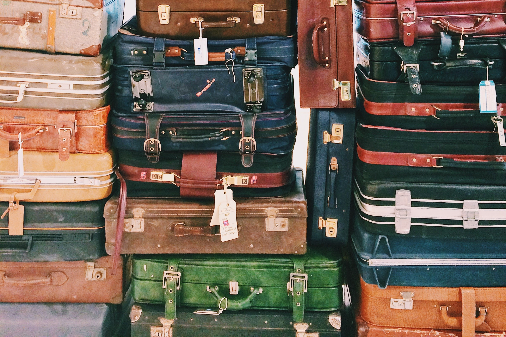
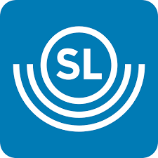

Under Bioteknikdagarna 2026 så anordnas boende på hostel alla nätter. Mer information kommer snart och vi kommer hjälpa till med incheckning vid ankomst till Stockholm! Man bor alltså på samma hostel alla nätter.


För att ta sig runt i Stockholm kan man promenera, ta en voi eller åka tunnelbana, buss eller pendeltåg via SL.
I SL-appen kan man köpa biljetter och få information om resor.
För att ta sig till KTH så är det tunnelbanestationen Tekniska Högskolan som är närmast.